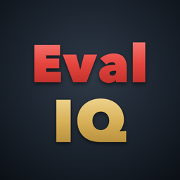

Eval IQ is a TEAM evaluation app for Tennessee school evaluators on iPhone, iPad, and Mac. Everything stays on your device: there's no account and no server.
Only on your device, encrypted by iOS or macOS while the device is locked. Eval IQ has no server, so we can't see, recover, or restore your records.
Open Settings › Backup, choose a passphrase of 8 or more characters, and save the encrypted backup file to Files, a drive, or AirDrop it to your new device. On the new device, open the file and enter the passphrase to restore.
The passphrase is never stored anywhere, so a backup can't be opened without it. Make a new backup from the device that has your records.
No. It works fully offline, in airplane mode, and never connects to a server.
Suggestions use Apple's on-device model and appear only on devices that support Apple Intelligence (for example iPhone 15 Pro or later, iPads and Macs with an M-series chip) with Apple Intelligence turned on. Every feature also works without it, and you always decide every score.
When you add an educator, enter their license status and prior-year level of effectiveness. Eval IQ plans the year's observations and indicators from the TDOE Observation Pacing Guide. You can change any observation afterward.
Yes, if you turn on Settings › Calendar. Events use private titles like "Observation" unless you choose to include teacher names. Turning it off lets you remove Eval IQ's events.
Open Settings › Delete all data, type DELETE, and confirm. This permanently removes every educator, observation, document, and setting from the device. Deleting the app also removes everything it stored.
No. Eval IQ is an independent tool. The TEAM rubrics are published by the Tennessee Department of Education.
See also the privacy policy.